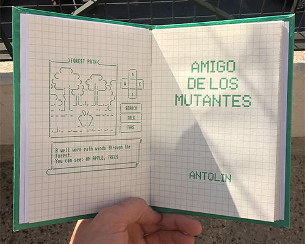

Amigo de los mutantes
Antolín
Primera edición
Junio 2015
24 páginas
Sobre Antolín
Andrés Olgiatti nació en Salta en 1983.
Es poeta, cantautor e ilustrador.
Publicó Las personas no me quieren lo suficiente (Belleza y Felicidad, 2008), Quiero destruir algo hermoso (Colección Chapita, 2009), Nunca seré millonario (Pánico el Pánico, 2012) y Demasiado tarde para morir joven (Tammy Metzler, 2013), entre otras plaquetas de poesía en editoriales independientes.
Dirige el proyecto editorial Un ninja sin capucha es un poeta.
Participa del sello discográfico platense Laptra bajo el cual publicó los discos Buen Finde, Diarios íntimos del futuro, Jóvenes y eternos, En vivo desde la casa del árbol, El susurro de las estrellas y Cajas de cereales abiertas sin premio.